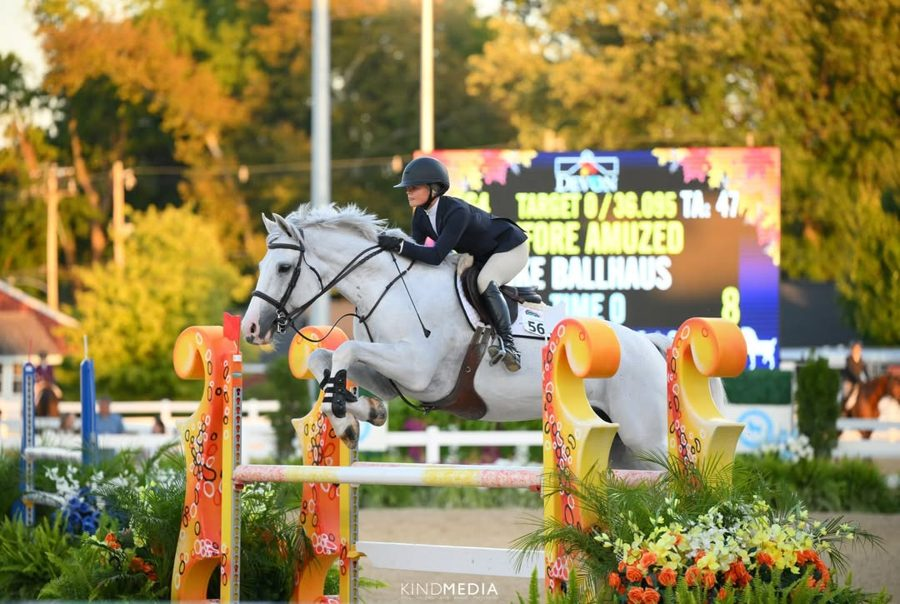
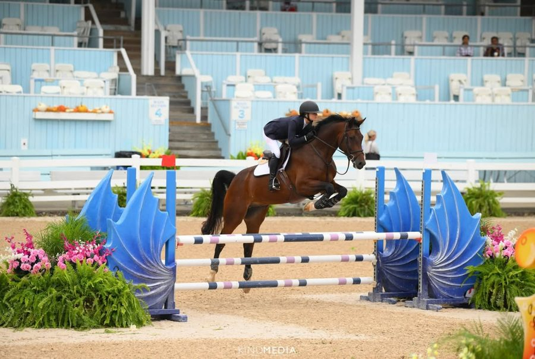
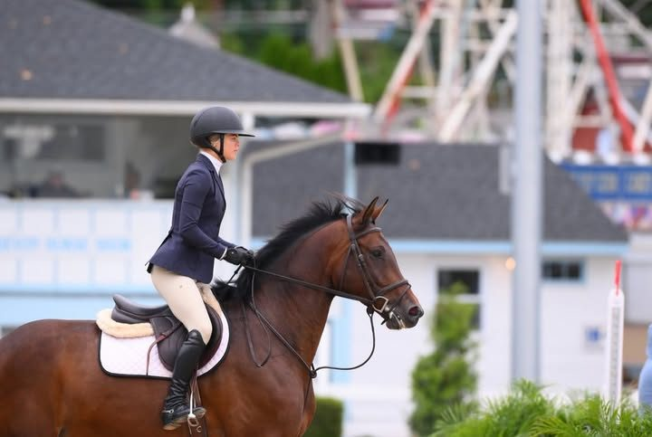

Devon Fall Classic
with Ballyfore Amuzed and Darth Revan
- Darth Revan: double clear in the 1.00m Amateur Classic
- Ballyfore Amuzed: 1.25m Amateur Jumpers in the Dixon Oval
A great week for the boys. Ballyfore Amuzed jumped beautiful rounds in the 1.25m Amateur division, only his second show at that height in America. It was also my first show with Darth Revan, a 6-year-old by Diarado, who handled some technical 1.00m courses and finished double clear in the classic despite the rain. A lovely finale to the summer at a historic show.


